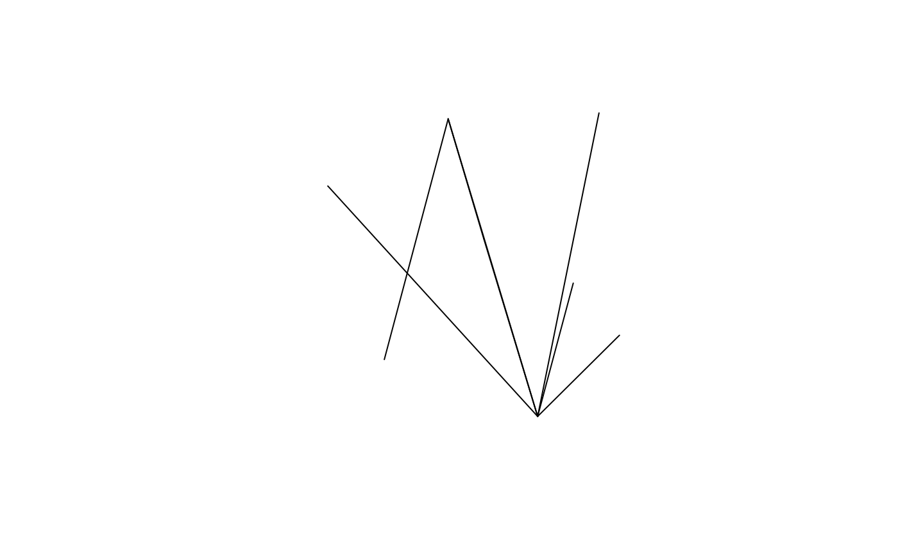
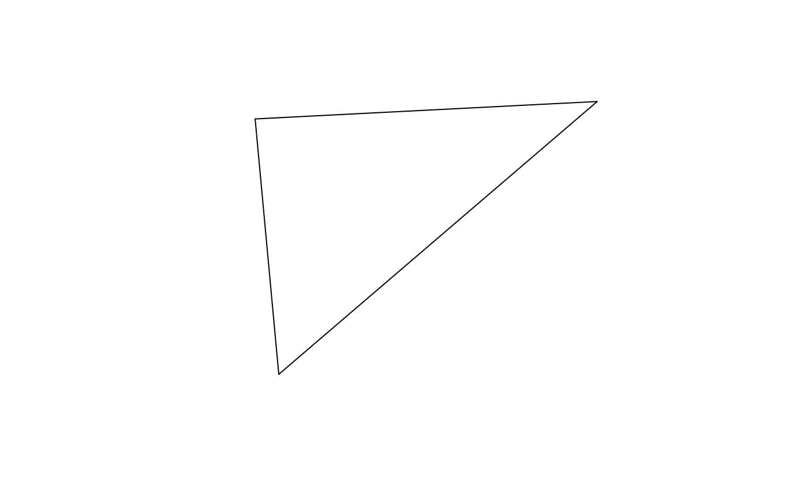

Introduction: what is OD data?
Origin-destination (OD) data is data that has not just one geographic location, but two. As the name suggests, OD data represents movement through geographic space, from an origin (O) to a destination (D). Despite the rather dull name, OD datasets are a vital part of the modern world, underpinning the transport models that influence current and future systems. If you, like many others, are frustrated by the car dominated nature of most cities, OD datasets should be of great interest: they underlie the car-centric transport models that inform and helped justify the vast expansion of highways that happened in the 20th Century (Boyce and Williams 2015).
If you are under any illusion that this healthy outcome of 20th Century transport planning, consider this: roads are now the largest cause of death and injury for young people worldwide, killing and maiming more than more than 1 million and 10 million people each year according to data from the World Health Organization. Even ignoring other problems such as air pollution, an obesity crisis driven by physical inactivity and climate change, it is clear that current transport systems, and the models that have helped to design them, are unsustainable. There are other reasons why transport data analysis is important, as outlined in the ‘stplanr paper’ (Lovelace and Ellison 2018). The purpose of this vignette is to introduce OD data, with examples based on data and functions from the stplanr package.
An minimal example OD dataset
OD data can be accessed from a range of sources (we will see code that downloads millions of OD pairs later in this vignette). Generally you will need to do some ‘data carpentry’ before the OD data is ‘clean’ and ready for analysis. This vignette will not cover cleaning OD, we assume you know R and come with clean (if not ‘tidy’) data!
In simple terms OD data looks like this:
library(stplanr)
library(dplyr)
od = pct::wight_od %>%
select(-matches("rail|name|moto|car|tax|home")) %>%
top_n(n = 5, wt = all)
class(od)
#> [1] "tbl_df" "tbl" "data.frame"
od
#> # A tibble: 5 x 8
#> geo_code1 geo_code2 all train bus bicycle foot other
#> <chr> <chr> <dbl> <dbl> <dbl> <dbl> <dbl> <dbl>
#> 1 E02003589 E02003588 809 0 32 47 283 2
#> 2 E02003589 E02003589 875 0 12 35 581 3
#> 3 E02003591 E02003588 831 1 14 70 145 1
#> 4 E02003591 E02003589 852 1 6 38 457 1
#> 5 E02003592 E02003592 1164 1 41 72 439 5Like all data, the object od, created in the preceding code chunk, comes from a specific context: the 2011 UK Census questions:
- In your main job, what is the address of your workplace?
- How do you usually travel to work (for the longest part, by distance, of your usual journey to work)?
- Work mainly at or from home
- Underground, metro, light rail, tram
- Train
- …
The object od is a data frame containing aggregated answers to these questions (see ?pct::get_od() for details). It is implicitly geographic: the first two columns refer to geographic entities but do not contain coordinates themselves (OD coordinates are covered below). Other columns contain attributes associated with each OD pair, typically counting how many people travel by mode of transport. OD data can be represented in a number of ways, as outlined in the next sections.
Origin-destination pairs (long form)
The most useful way of representing OD data is the ‘long’ data frame format described above. This is increasingly the format used by official statistical agencies, including the UK’s Office for National Statistics (ONS), who provide origin destination data as a .csv file. Typically, the first column is the zone code of origin and the second column is the zone code of the destination, as is the case with the object od. Subsequent columns contain attributes such as all, meaning all travel between zones, as illustrated below (we will see a matrix representation of this subset of the data in the next section):
od[1:3]
#> # A tibble: 5 x 3
#> geo_code1 geo_code2 all
#> <chr> <chr> <dbl>
#> 1 E02003589 E02003588 809
#> 2 E02003589 E02003589 875
#> 3 E02003591 E02003588 831
#> 4 E02003591 E02003589 852
#> 5 E02003592 E02003592 1164geo_code1 refers to the origin, geo_code2 refers to the destination.
Additional columns can represent addition attributes, such as number of trips by time, mode of travel, type of person, or trip purpose. The od dataset contains column names representing mode of travel (train, bus, bicycle etc), as can be seen with names(od[-(1:2)]). These ‘mode’ columns contain integers in the example data, but contain characters, dates and other data types, taking advantage of the flexibility of data frames.
Origin destination matrices
The ‘OD matrix’ representation of OD data represents each attribute column in the long form as a separate matrix. Instead of rows representing OD pairs, rows represent all travel from each origin to all destinations (represented as columns). The stplanr function od_to_odmatrix() converts between the ‘long’ to the ‘matrix’ form on a per column basis, as illustrated below:
od_matrix = od_to_odmatrix(od[1:3])
class(od_matrix)
#> [1] "matrix"
od_matrix
#> E02003588 E02003589 E02003592
#> E02003589 809 875 NA
#> E02003591 831 852 NA
#> E02003592 NA NA 1164Note that row and column names are now zone codes. The cell in row 2 and column 1 (od_matrix[2, 1]) means that 831 people travel from zone E02003591 to zone E02003588. It is a simpler data structure, usually only containing only counts, and was popular in 20th Century transport models. ‘OD matrix’ is still sometimes used informally to any OD data.
However, I recommend using the long OD pair representation: OD matrices become unwieldy for large OD datasets, which are likely to be sparse, with many NAs. Furthermore, multiple lists of OD matrices or ‘OD arrays’ must be created to represent multiple attributes. This is demonstrated in the code chunk below, which represents travel between OD pairs by all modes and by bike:
lapply(c("all", "bicycle"), function(x) od_to_odmatrix(od[c("geo_code1", "geo_code2", x)]))
#> [[1]]
#> E02003588 E02003589 E02003592
#> E02003589 809 875 NA
#> E02003591 831 852 NA
#> E02003592 NA NA 1164
#>
#> [[2]]
#> E02003588 E02003589 E02003592
#> E02003589 47 35 NA
#> E02003591 70 38 NA
#> E02003592 NA NA 72The function odmatrix_to_od() converts OD matrices back into the more convenient long form:
Intrer and intra-zonal flows
A common, and sometimes problematic, feature of OD data is ‘intra-zonal flows’. These are trips that start and end in the same zone. The proportion of travel that is intra-zonal depends largely on the size of the zones used. It is often useful to separate intra-zonal and inter-zonal flows at the outset, as demonstrated below:
(od_inter = od %>% filter(geo_code1 != geo_code2))
#> # A tibble: 3 x 8
#> geo_code1 geo_code2 all train bus bicycle foot other
#> <chr> <chr> <dbl> <dbl> <dbl> <dbl> <dbl> <dbl>
#> 1 E02003589 E02003588 809 0 32 47 283 2
#> 2 E02003591 E02003588 831 1 14 70 145 1
#> 3 E02003591 E02003589 852 1 6 38 457 1
(od_intra = od %>% filter(geo_code1 == geo_code2))
#> # A tibble: 2 x 8
#> geo_code1 geo_code2 all train bus bicycle foot other
#> <chr> <chr> <dbl> <dbl> <dbl> <dbl> <dbl> <dbl>
#> 1 E02003589 E02003589 875 0 12 35 581 3
#> 2 E02003592 E02003592 1164 1 41 72 439 5Desire lines
The previous representations of OD data are all implicitly geographic: their coordinates are not contained in the data, but associated with another object that is geographic, typically a zone or a zone centroid. This is problematic, meaning that multiple objects or files are required to fully represent the same data. Desire line representations overcome this issue. They are geographic lines between origin and destination, with the same attributes as in the ‘long’ representation.
od2line() can convert long form OD data to desire lines. The second argument is a zone or a centroid dataset that contains ‘zone IDs’ that match the IDs in the first and second columns of the OD data, as illustrated below:
The preceding code chunk created a zones object called z, the coordinates of which were used to convert the object od into l, which are geographic desire lines. The desire line object is stored in as a geographic simple features object, which has the same number of rows as does the object od and one more column:
The new column is the geometry column, which can be plotted as follows:

By default, plotting l shows the attributes for each line:

Because these lines have a coordinate reference system (CRS) inherited from the zones data, they can also be plotted on an interactive map, as follows:
A larger example
The minimal example dataset we’ve been using so far is fine for demonstrating the key concepts of OD data. But for more advanced topic, and to get an idea of what is possible with OD data at a city level, it helps to have a larger dataset.
We will use an example dataset representing commuting in London, accessed as follows (note: these code chunks are not evaluated in the vignette because it starts by downloading 2.4 million rows and could take a few minutes to run). First, we can use the pct package to download official data from the UK (note the addition of the % active column):
library(dplyr)
# get nationwide OD data
od_all = pct::get_od()
nrow(od_all)
#> 2402201
od_all$Active = (od_all$bicycle + od_all$foot) /
od_all$all * 100
centroids_all = pct::get_centroids_ew() %>% sf::st_transform(4326)
nrow(centroids_all)
#> 7201
london = pct::pct_regions %>% filter(region_name == "london")
centroids_london = centroids_all[london, ]
od_london = od_all %>%
filter(geo_code1 %in% centroids_london$msoa11cd) %>%
filter(geo_code2 %in% centroids_london$msoa11cd)Now that we have the input OD data (in od_london) and zones (population-weighted centroids in cents_london in this case), can can convert them to desire lines:
Even after filering flows to keep only those with origins and destinations in London, there are still more than 300k flows. That is a lot to plot. So we’ll further subset them, first so they only contain inter-zonal flows (which are actually lines, intrazonal flows are lines with length 0, which are essentially points) and second to contain only flows containing above a threshold level of flows:
min_trips_threshold = 20
desire_lines_inter = desire_lines_london %>% filter(geo_code1 != geo_code2)
desire_lines_intra = desire_lines_london %>% filter(geo_code1 == geo_code2)
desire_lines_top = desire_lines_inter %>% filter(all >= min_trips_threshold)
nrow(desire_lines_top)
#> 28879If we do any analysis on this dataset, it’s important to know how representative it is of all flows. A crude way to do this is to calculate the proportion of lines and trips that are covered in the dataset:
nrow(desire_lines_top) / nrow(desire_lines_london)
#> 0.08189046
sum(desire_lines_top$all) / sum(desire_lines_london$all)
#> 0.557343This shows that only 8% of the lines contain more than half (55%) of the total number of trips.
Plotting origin-destination data
Once you have an OD dataset of a size that can be plotted (20,000 desire lines is quick to plot on most computers) a logical next stage is to plot it, e.g. with sf’s plot() method:
 You may be disapointed by the result, which is more of a ‘hay stack’ plot than an intuitive illustration of flows across the city. To overcome this issue, you can set the aesthetics to emphasize with important flows, e.g. by line width in
You may be disapointed by the result, which is more of a ‘hay stack’ plot than an intuitive illustration of flows across the city. To overcome this issue, you can set the aesthetics to emphasize with important flows, e.g. by line width in sf’s plotting system:
lwd = desire_lines_top$all / mean(desire_lines_top$all)
q = quantile(desire_lines_top$all)
col_labs = sf::sf.colors(n = length(q) - 1, alpha = 0.05)
col = cut(desire_lines_top$all, breaks = q, labels = col_labs) %>%
as.character()
plot(desire_lines_top[, "all"], col = col, lwd = lwd)
This is better, but is still not idea: the code was not intuitive to write, and the result is still not publication quality. Instead, it makes sense to make a dedicated mapping package such tmap, as outlined in the visualisation chapter of the open source book Geocomputation with R (Lovelace, Nowosad, and Meunchow 2019). As shown in the transport chapter of that book, OD flows can be visualised with the following code:
library(tmap)
desire_lines_top = desire_lines_top %>%
arrange(Active)
tm_shape(london) + tm_borders() +
tm_shape(desire_lines_top) +
tm_lines(palette = "plasma", breaks = c(0, 5, 10, 20, 40, 100),
lwd = "all",
scale = 9,
title.lwd = "Number of trips",
alpha = 0.5,
col = "Active",
title = "Active travel (%)",
legend.lwd.show = FALSE
) +
tm_scale_bar() +
tm_layout(
legend.bg.alpha = 0.5,
legend.bg.color = "white"
)
The above plot contains much information, providing a visual overview of the transport pattern in the city, telling us that:
- It is a monocentric city, with most flows going to the centre.
- Active transport is geographically dependent, dominating in the central north of the city and with limited uptake on the outskirts of the city.
- Although the city centre dominates, there are many small clusters of flows in the outer region, for example near Heathrow airport, which is located in the far East of the map.
Plotting OD data in this way can tell us much about cities, each of which has a different travel pattern. The below figure, for example, shows the same plotting code applied to Bristol, a more polycentric city with a lower average percentage of travel by walking and cycling. See Section 12.4 of Geocomputation with R for details.

Summaries by origin and destination
It is possible to group OD data by origin and destination to gain information at the zone level. The code and resulting plot below, for example, summarises the number of people departing from each zone by mode:
zones_london = pct::get_pct_zones("london") %>%
select("geo_code")
origin_attributes = desire_lines_top %>%
sf::st_drop_geometry() %>%
group_by(geo_code1) %>%
summarize_if(is.numeric, sum) %>%
dplyr::rename(geo_code = geo_code1)
zones_origins = left_join(zones_london, origin_attributes, by = "geo_code")
plot(zones_origins)
We can observe a number of features, including that:
- Rail is much more common in the south, reflecting the greater density of the local rail network, with short distances between stops, in the South of the city.
- Cars dominat in the outer fringes, especiall in the West.
- Taxi and motorbike use have intriguing clusters in the West (perhaps around the wealthy Kensington area for taxis).
The pattern is quite different when we calculate the destinations:
destination_attributes = desire_lines_top %>%
sf::st_drop_geometry() %>%
group_by(geo_code2) %>%
summarize_if(is.numeric, sum) %>%
dplyr::rename(geo_code = geo_code2) %>%
mutate_at(vars(-matches("geo_|all")), funs( . / all)) %>%
left_join(zones_london, ., by = "geo_code")
plot(zones_destinations, border = NA)
Oneway lines
The previous plot looks good but has issues. One is that, for ‘symetric’ OD pairs, in which origin zones/points can be the same as destinations, flows overlap.
References
Boyce, David E., and Huw C. W. L. Williams. 2015. Forecasting Urban Travel: Past, Present and Future. Edward Elgar Publishing.
Lovelace, Robin, and Richard Ellison. 2018. “Stplanr: A Package for Transport Planning.” The R Journal 10 (2): 7–23. https://doi.org/10.32614/RJ-2018-053.
Lovelace, Robin, Jakub Nowosad, and Jannes Meunchow. 2019. Geocomputation with R. CRC Press. http://robinlovelace.net/geocompr.